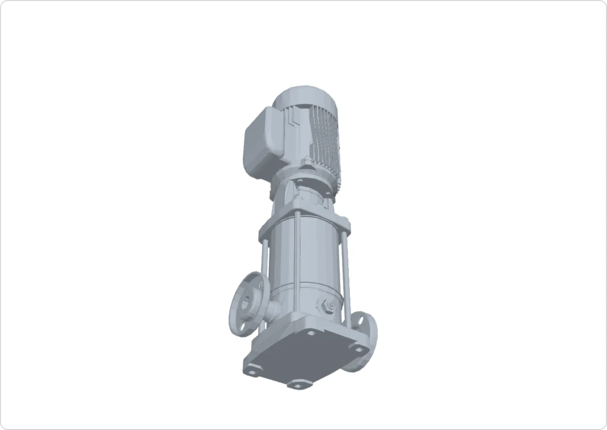
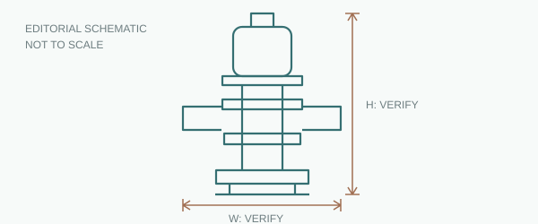

Traceable performance points
The catalogue lists paired flow–head points for 3SV08 → buyers can screen a duty point → an engineer still confirms actual fit.
See facts and source ↗
CAD filename-to-model mapping needs seller review; this image is not an approved public engineering drawing.
Vertical multistage centrifugal pump · specific configuration
A specific configuration in a series used for building water pressure boosting and related applications. Check the flow–head evidence and open questions before requesting a quote.
* Values are transcribed from local model notes and a series catalogue. Each needs approval before publication. Flow and head are paired table points, not freely combinable ranges.
Browsing needs no contact details. Contact is confirmed only when an RFQ is submitted. This prototype does not send inquiries.
Feature → buyer decision value → remaining check. No unsupported performance promises.
The catalogue lists paired flow–head points for 3SV08 → buyers can screen a duty point → an engineer still confirms actual fit.
See facts and source ↗Local model notes identify an AISI 316 configuration → the material to review is clear → medium compatibility still needs confirmation.
Check configuration scope ↗CAD-derived views reveal layout questions early → exact filename mapping and public use still require review.
Check file status ↗Units stay visible, and missing values stay missing. Each published value must link to an approved model or series source.

Editorial reference, not a manufacturing drawing.Local Lowara e-SV 50 Hz Rev. B technical catalogue, page 24, 3SV08 row. The 3 m³/h and 48.1 m values form one catalogue point. Model decoding and material also need seller review before publication.
See document inventory and access →Only the first column has local manufacturer material. B and D are synthetic test records for UI and RFQ prefill.
| Decision factor | 3SV08NL007T Research model · approval pending | SYN-PUMP-B Synthetic demo | SYN-PUMP-D Synthetic demo |
|---|---|---|---|
| Flow | 0–4.4 m³/h * | 2–10 m³/h | 0.8–3.5 m³/h |
| Head | 60–27.5 m * | 20–55 m | 30–70 m |
| Power | 0.75 kW | 1.5 kW | 1.1 kW |
| Material | AISI 316 * | Not provided | Not provided |
| Medium | Unverified | Unverified | Unverified |
| Port / envelope | CAD review pending | No source | No source |
| Drawings | Internal preview | No source | No source |
| Application basis | Series catalogue | Synthetic scenario | Synthetic scenario |
| Open points | Medium / installation | Curve / material / CAD | Curve / material / CAD |
| Next step |
* Manufacturer flow and head values are paired catalogue points. All numbers in synthetic columns are invented tests, not real products or engineering recommendations.
These are e-SV series catalogue applications, not approval of this configuration for every site.
For building supply systems. Check the flow–head point and boosting use; piping, pressure and medium remain open.
For filtration and RO/UF packages. Check liquid chemistry, seals and continuous duty.
For cooling and circulation. Check temperature, system curve and installation clearance.
The current files do not confirm seller customization services. These are questions to clarify, not offered options.
Factory photos, quality system and test records have not been supplied. This section exposes the evidence gap.
Real factory photos and context await seller upload and approval.
The labels above are a template, not proof this supplier runs those processes. Pump test evidence to request includes hydrostatic pressure, performance curve and sealing checks.
Common names such as CE, RoHS and ISO 9001 are not claims about this pump or seller.
No current certificate, number or scope for this seller and model was supplied.
Status: no claimNo verified customer type, purchase volume or cooperation duration is available. Future cases need permission and all three details.
Status: none publishableA file's existence does not grant public download rights. No unapproved file is exposed as a public link here.
Rev. B series catalogue · model mapping pending
Series PDF exists locally · public use pending
No approved model-specific manual supplied
Local files exist; FL/NL mapping and public rights need review
Only sourced facts are answered here. Seller policies and commercial terms still need confirmation.
Rev. B has paired 3SV08 flow–head points. Your duty point, system curve and liquid still need an engineering check.
No publishable model rating or seller certificate is available in the current files. State the required standard in your RFQ.
The seller has not provided approved numbers. Add quantity and desired date to your inquiry.
Not supplied. Sales must confirm based on destination and order terms.
Potential configuration questions and a fictional process are shown above; neither is an approved seller offer or timing commitment.
You do not need a final model selection. This page form and the website chat RFQ will share one business record and sales queue. This prototype does not send or save data.
This demo makes no unapproved 24-hour response promise.